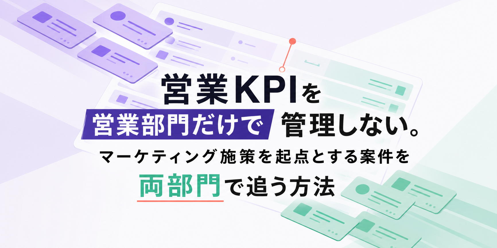
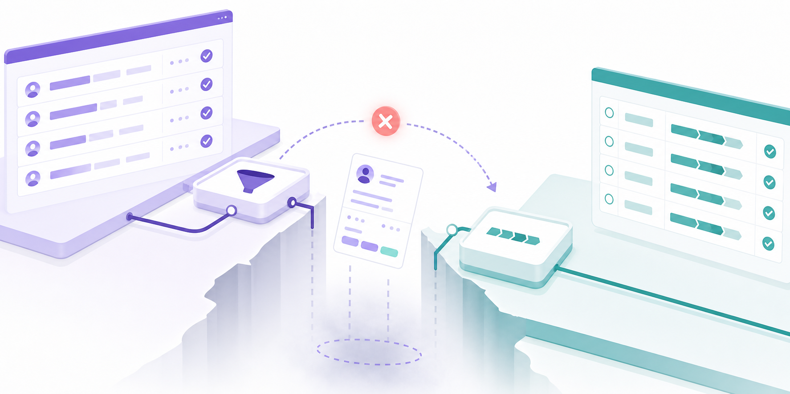
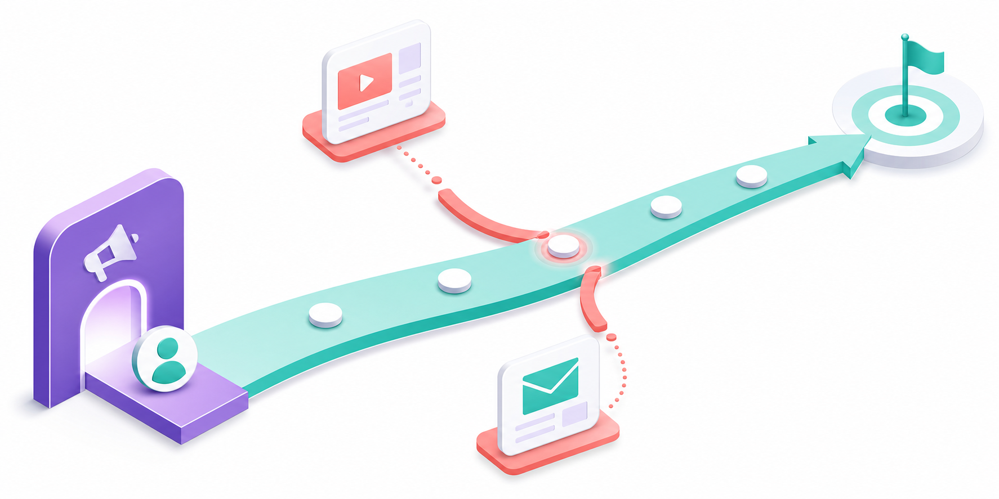
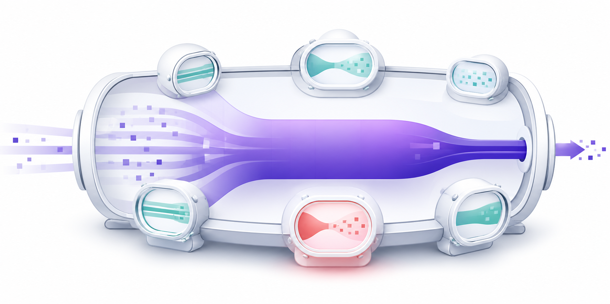
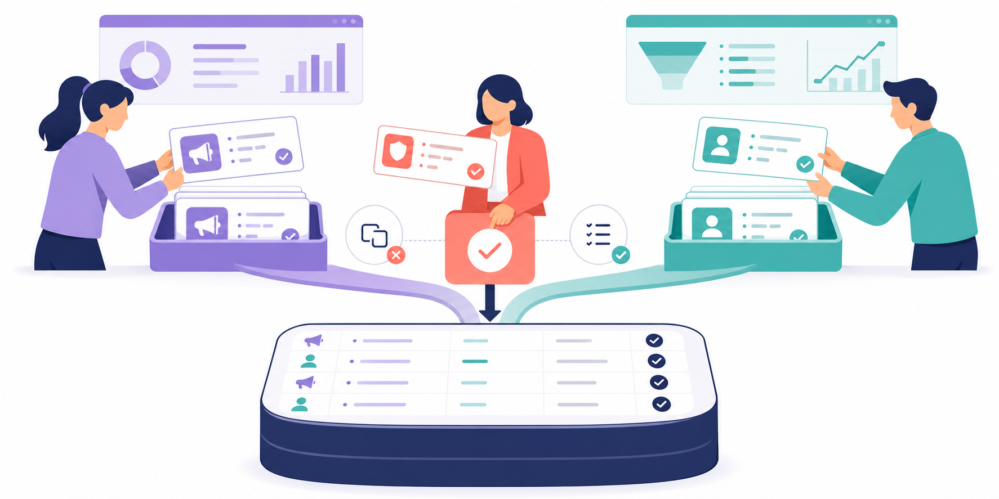
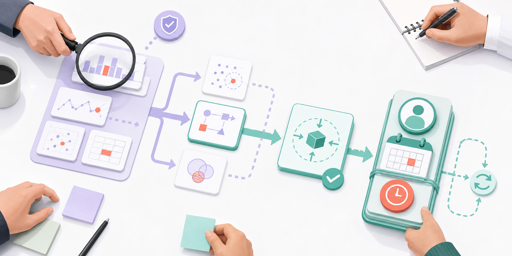
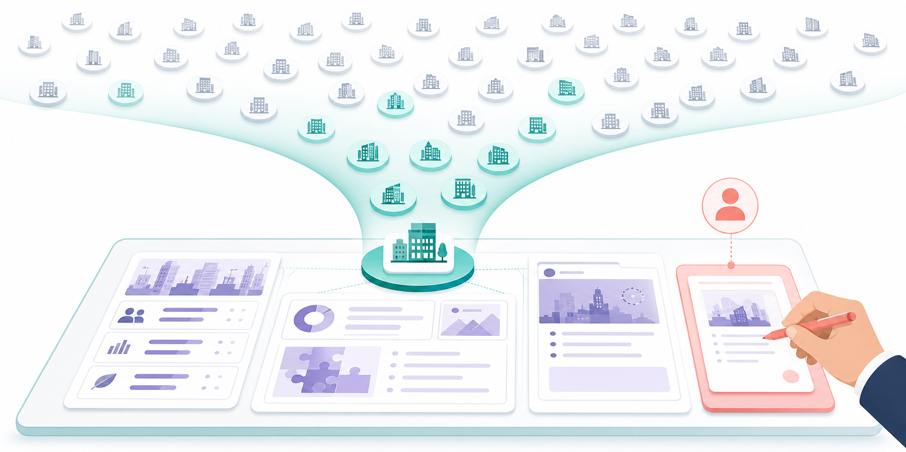
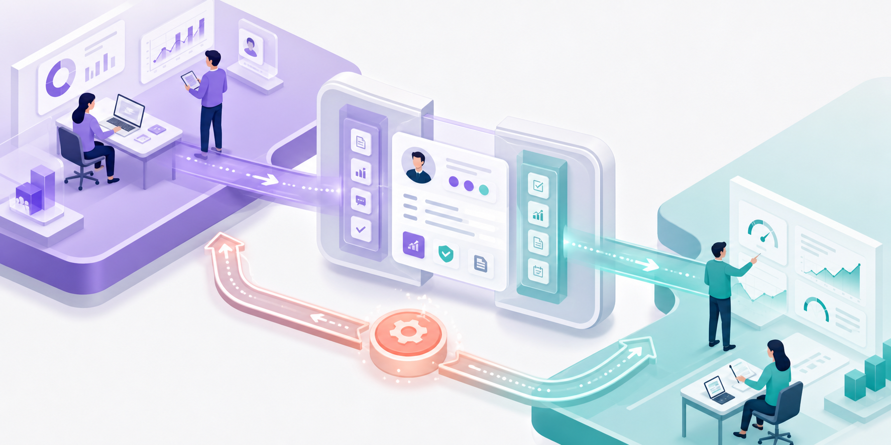

営業KPIを営業部門だけで管理しない。マーケティング施策を起点とする案件を両部門で追う方法
みなさんこんにちは、Valorize AI代表の鈴木創也です。
マーケティング部門はリード数の目標を達成しています。 それなのに、営業部門が管理する商談数と受注額は目標に届かず、パイプラインも細いままです。
二つの報告は、どちらも正しいのかもしれません。 だとすれば、営業へ渡った後の件数や見込金額は、どの工程で減ったのでしょうか。
部門ごとのKPIだけでは、この問いに答えられません。 マーケティング施策を通じて獲得した見込み顧客が、営業対応を経て商談となり、パイプラインへ登録される流れを同じ定義で追って、初めて調べる場所が決まります。
必要なのは、全員を同じ数字で評価する制度ではありません。 部門固有のKPIを残したまま、マーケティングから営業への受け渡しを共同で改善するためのKPIを持つことです。
数字が正しいまま、原因だけが見えなくなる

マーケティング部門は、リード数、資料請求数、獲得単価を管理します。 営業部門は、商談数、案件の進行、受注率を管理します。 それぞれの仕事を管理する指標としては、どちらも必要です。
ところが、二つの部門の間では、見込み顧客と情報の受け渡しが行われます。 営業が見込み顧客に対応したか、対応後に商談へ進んだか、商談後に案件化の条件を満たしたかを確認する必要があります。 この流れがつながっていなければ、マーケティングは「必要な件数を渡した」と説明し、営業は「案件につながる見込み顧客が少ない」と返すしかありません。
「リードの質が低い」という言葉も、まだ原因ではありません。 対象企業が違ったのか、訴求が合わなかったのか、初回対応が遅れたのか、引き継ぎ情報が足りなかったのかによって、見直すべき運用は異なります。
バーチャレクス・コンサルティングのRevOpsに関する実態調査では、部門をまたぐ取り組みを担う部署や担当者がいる企業のほうが、工程ごとの管理指標の設定や工程間のデータ連携と活用が相対的に進んでいると報告されています。 この調査は、共通KPIが売上を増やすという因果関係を証明するものではありません。 部門をまたぐ改善に必要なデータを考えるうえで、参考になる結果です。
マーケティング施策の「起点」と「途中の影響」を分ける

最初の難所は、どの案件をマーケティング施策を起点とする案件として数えるかです。 ここが曖昧なら、同じ案件がイベント、資料請求、メール施策のすべてに計上され、集計結果を期間ごとに比較できなくなります。
まず、見込み顧客が最初に反応した施策を起点として記録します。 営業活動が始まった後に、別のメールやイベントが案件の進行に関わった場合は、途中の影響として別に記録します。
たとえば、試行時には、特定のイベントへの参加や資料請求を最初の流入経路とする見込み顧客に対象を絞ります。
途中で別の施策が関わった場合も、1件の案件金額を複数の起点に重複して加算せず、複数施策の貢献度を分析するときは、起点の集計と分けたうえで、案件金額の配分方法を決めます。
Adobeは、リードと商談情報を結び付け、施策が商談、パイプライン、受注にどのように関わったかを確認する考え方を国内向けの解説で紹介しています。 何を起点とし、途中の影響をどう扱うかを先に決めることで、両部門が同じ計算結果を確認できます。
次の工程へ進んだ条件を文章にする
集計対象がそろっても、工程の意味が部門ごとに違えば比較できません。 MQL、SQL、商談といった名称を合わせるだけでは足りないのです。
最低限、次の四つの状態を文章で定義します。
対象となる見込み顧客
合意した流入経路、対象企業、対象期間に該当する見込み顧客です。
営業対応の開始
営業が対応対象として引き受け、担当者が最初の連絡を行った状態です。
継続対応する商談
顧客の課題、商談の目的、次に確認する事項が記録され、営業が継続して対応すると判断した状態です。
パイプラインへの登録
営業が案件化条件を満たす商談だと判断し、想定金額、現在の段階、完了予定日を登録した状態です。
四つの定義は、件数を数えるためだけにあるのではありません。 誰が何を確認し、どの情報を添えて、次の担当者へ渡すかを決める受け渡し条件でもあります。
HubSpotのMQLとSQLに関する国内向け解説も、リード創出からMQL、SQL、商談、顧客化までを一続きの工程として捉えています。 ただし、具体的な条件は商材、顧客の検討過程、営業体制によって変わります。 他社の条件をそのまま転用せず、自社で確認できる事実を基に定義すると、受け渡し後の判断に使えます。
共通KPIの中心指標と補助指標

集計対象と各工程を定義すると、ようやく数字を計算できます。 それでも、一つの数字ですべてを説明しようとすると、再び原因を見失います。
中心に置くのは、マーケティング施策を起点とする案件の見込金額です。 これは、集計期間内に新しくパイプラインへ登録された案件のうち、合意した起点に該当する案件金額の合計です。
計算を始める前に、次の条件を固定します。
- どの流入経路と顧客層を対象にするか
- 獲得後、どの期間内に営業へ引き渡した見込み顧客を含めるか
- どの状態をパイプラインへの登録とみなすか
- 案件の見込金額に何を含めるか
- どの期間に登録された案件を集計するか
案件金額に受注確度を掛けない総額と、受注確度を掛けた金額は混在させません。 また、1件の大型案件だけで合計額が大きく動いたのかを判断できるように、登録案件数を併記します。
中心となる金額が下がったときは、補助指標を使って、詳しく調べる工程を絞ります。
- 営業対応開始率：営業が最初の連絡を行った見込み顧客数を、営業へ引き渡した見込み顧客数で割ります。
- 商談化率：継続対応すると判断した商談数を、営業対応を始めた見込み顧客数で割ります。
- 案件化率：パイプラインへの登録件数を、継続対応すると判断した商談数で割ります。
- パイプライン登録までの日数：対象となる見込み顧客を獲得した日から、案件をパイプラインへ登録した日までの日数を確認します。
同じ「商談化率」でも、分母が違えば別の数字です。 資料には名称だけでなく、分母と分子を明記します。
ここで足を止める必要があります。 営業対応開始率の低下は、担当者不足を証明しません。 対象条件が広すぎること、担当者の割り当てが遅いこと、引き継ぎ情報が足りないことなど、複数の可能性があります。
KPIが示すのは原因そのものではなく、詳しく調べる工程です。 該当する見込み顧客や案件の記録を確認してから、見直す運用を決めます。
データ更新と集計の責任分担

定義が整っても、誰も更新しなければ翌月には比較できなくなります。 データの更新、集計、定義変更をすべて共同責任にすると、かえって担当者が曖昧になります。
マーケティング部門は、流入経路、対象施策、顧客の反応、営業へ引き渡す理由を記録します。 営業部門は、引き継ぎ日時、初回対応の日時と内容、商談の結果、案件化したかどうかとその理由を記録します。
営業企画など、部門をまたいで収益管理を担う担当者がいる場合は、その担当者が定義の管理、重複計上の確認、集計を担います。 専任者がいなければ、集計責任者を一人決めます。 営業とマーケティングの責任者は、定義の変更と改善策を承認します。
情報が一部足りない見込み顧客を、すぐ営業対応の対象外にする必要はありません。 未確認事項、確認する担当者、期限を記録すれば、確認後に判断できます。 一方で、対象条件から外れる場合や、営業へ引き渡す理由がない場合は、その理由を定型の選択肢と短い補足で残します。
Adobe Marketo EngageのLead to Revenue Practiceでも、見込み顧客の段階に応じた対応と、社内で定めた期限を踏まえた初回対応の進め方が示されています。 期限は急がせるためだけのものではなく、次の担当者が判断できる時点をそろえるためにあります。
共通KPIを人事評価にも使う場合は、その達成責任を両部門に一律に負わせる設計にはしません。 評価項目を、各部門が直接変えられる活動と、両部門が共同で改善する結果に分けます。 改善会議の指標と個人評価の基準を区別すれば、数値が悪化した工程を責任追及だけで終わらせずに検証できます。
会議では、数字から仮説へ移る

では、共通KPIの数値が悪化した場合、会議では何を決めればよいのでしょうか。
最初に確かめるのは、前回と同じ条件で集計できているかです。 集計期間、流入経路、工程の判定条件が前回と同じかを確かめ、未入力や重複計上も調べます。 定義が変わっていれば、増減の理由を営業活動だけに求めることはできません。
条件がそろっていたら、次の順で判断します。
- マーケティング施策を起点とする案件の見込金額と登録案件数を、目標または同じ条件で集計した過去実績と比べる。
- 営業対応開始率、商談化率、案件化率、登録までの日数から、目標や過去実績との差が大きい工程を選ぶ。
- 該当する見込み顧客や案件の記録を見て、対象条件、顧客へ伝えた内容、対応速度、引き継ぎ情報、商談準備を確認する。
- 次回までに変える内容、担当者、期限、再確認するKPIを決める。
数値が悪化した工程を選ぶだけでは、会議は終わりません。 たとえば商談化率が下がっていても、獲得した顧客層が変わったのか、初回対応が遅れたのか、顧客の課題を確認できなかったのかで、次の行動は変わります。
Salesforceは収益最適化機能の発表で、KPIや商談状況の変化を把握し、重要な商談への注力、担当者への助言、方針の見直しに生かす考え方を示しています。 製品の有無にかかわらず、会議の成果は説明の巧さでは測れません。 変更内容、担当者、期限、再確認するKPIまで決めると、会議の結論を次回に検証できる形で残せます。
共通KPIを営業活動の準備へつなげる

該当する見込み顧客や案件の記録を確かめた結果、企業調査や商談前の準備が足りないと分かることもあります。 この場合、KPIを細かくするだけで商談化率が改善するとは限りません。 対象企業を調べ、連絡する理由と提案の仮説を整理する必要があります。
Valorize AIが提供するSales Triggerは、人間が定めた顧客層を基に、企業リストの作成、個社情報の調査、企業ごとの提案仮説と連絡文面の準備を進める半自動化AIエージェントです。 まず、担当者が共通KPIと該当する記録を照らし合わせ、優先して見直す顧客層を決めます。 Sales Triggerはその方針に沿って準備を進め、営業担当者が顧客との対話や提案内容の検討に集中できる状態を目指します。 連絡文面は、送信前に人間が確認する運用を基本としています。
まとめ：共通KPIで部門間の受け渡しを改善する

マーケティング部門がリード数の目標を達成していても、営業部門では必要なパイプラインを確保できていないことがあります。 このとき、どちらの報告が正しいかを議論するだけでは、見込み顧客や案件が止まった工程は分かりません。
まず、一つの流入経路と顧客層を選び、起点と各工程の条件、分母と分子をそろえます。 次に、案件の見込金額と補助指標から調べる工程を選び、該当する記録で原因を確かめます。
原因が分かったら、変える運用、担当者、期限、次に確認するKPIまで決めます。 ここまで決めることで、会議の結論を次の改善につなげられます。
マーケティングと営業が同じ案件を見ながら、受け渡しのどこを変えるかを決める。 共通KPIは、その判断を両部門で続けるための数字です。